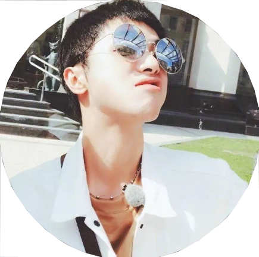

刘新阳
内心独白
在黑暗无人的水母馆里，迎面看到这些深海里无声的水母，令人惊骇。水母在水中缓慢而优美地漂动，长长的裙带漫天舞动，那样的优游好像少年时代感受到的，世界万物的诗意，一种恍然不真实，却又膨胀于心的诗意。以后经历了生活中那么多坚硬的真实后，突然遇到它们，它们飘逸的样子令人诧异地发现那初心依然还在。
据说它们一生都生活在深海里。若在阳光不能到达的深处，它们优美的身体发不出一丝光来，只与黑暗混为一体。然而，它们只要活着就会这样舞动。正好像心中那少年时代起就在的诗意，无用，无声无息，但从未停止过舞动，在黑暗的不为人知处。据说水母是没有思想的，所以它们舞动起来，始终有种无辜的单纯和纯粹的精美。它们也对自己身上带着的毒素一无所知，如果人碰到它，便被蜇伤。这点也与少年时代的初心相仿。
我看着这些寂静无声的水母时，除了听见自己在说“我的天啊”以外，脑中只是空白。似乎还没有什么像在水中几乎透明的，轻盈舞动着，变化无穷却安静本分的裙带那样打动我，我看到自己伸出手指叩击玻璃，但水母仍独自沉浮着。这情景我非常熟悉，长大以后，我和自己的梦想一直就是这样相处的。